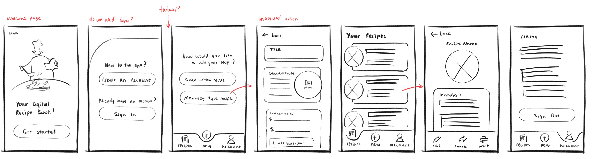
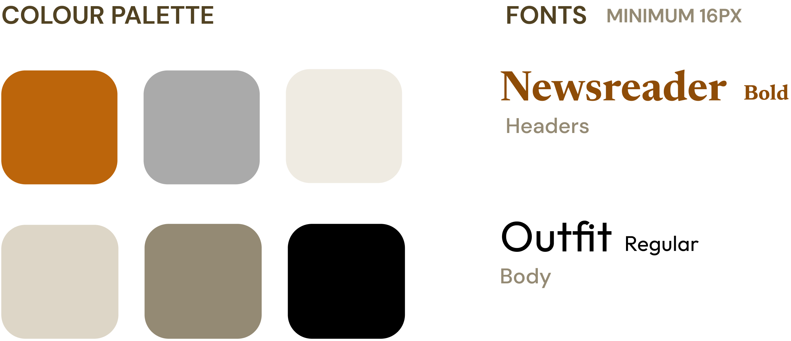

Jasper Gass
an e-portfolio

This was a 3 person project developed over the course of 7 weeks in fall of 2022. We were tasked with designing, prototyping, and doing user tests for an app with a senior target audience. We made a digital recipe app for Filipino immigrant seniors to share recipes and connect with their family. The finished prototype can be found here: https://preview.uxpin.com/d8d683c4197730c1b045aa4701737d4d26a8181f#/pages/159707647
We started this project by researching our demographic and similar apps to then create sketches and personas. Our style guide includes very warm colors to create a friendly atmosphere, and our fonts are classy but simple and easy to read.
 We created several initial wireframes to explore different layout options. The manual adding recipe page especially went through many iterations. The first two images are different UI options we tried that had different interactions for adding in content. The third image is the first prototype we made, which notably split the process of adding a recipe into several pages to break down the flow into chunks and lessen the mental load. Despite this we found that adding ingredients individually was still very tasking. In our final iteration, the 4th image, we opted for a text area to make inputting ingredients as easy as possible.
We then conducted user tests. We tested 9 people in total, ages 20-61, including a Filipino family that matched our target demographic. We created a list of tasks for users to complete and a simple survey to ask them their opinions when they were done. 4 tests were conducted online, which required extra steps to test wifi connectivity and share screens. Generally, our results showed that our styling was effective but that there were inconsistencies and functional errors that hindered the experience.
Two things we changed based on our feedback were adding error prompts and a share function. Error prompts are very important because it helps users know the system’s status and recover from errors. The share function aids our main goal of passing down recipes.
This was a massive learning process for me. My major areas of growth were my understanding of how to create and use personas and how to conduct user tests. I learned a lot about personas from my teammates and they were incredibly helpful to us while we were refining our idea so we could design an app that works well for our audience. I had never conducted a prototype test before, so I quickly developed those skills. We also created a website to display our work, which can be found here: https://iat334a3.jasperjade.repl.co/